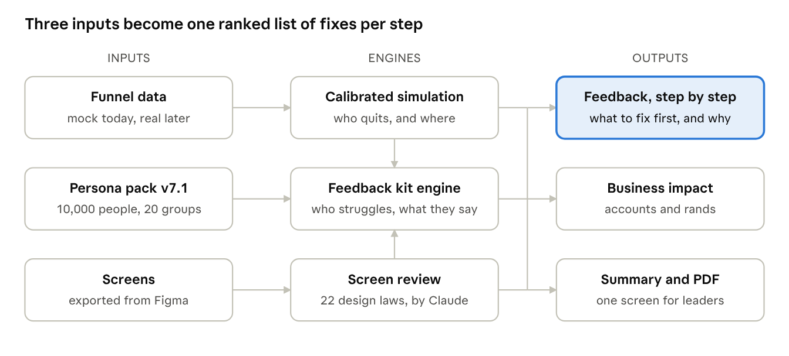

Find out who a flow fails, before launch.
Athena shows where people are likely to quit or struggle, who struggles most, what they would say about it, and what to fix first.
The synthetic customers come from a persona pack built on South African statistics. They differ in phone, data, documents, income, language, reading level, trust and patience. So a flow that works for a salaried iPhone user in Sandton but fails a grant recipient on a feature phone in rural Limpopo shows up before launch, not after.
Athena does not replace user research. It decides what research should test first, and it catches the obvious failures cheaply so real sessions can go deeper.
Wisdom, strategy and craft.
Athena is the Greek goddess of wisdom, strategy and craft. Three parts of that fit what the tool does.
- Strategy before the battleShe stood for planned, considered campaigns, not brute force. Athena is about thinking a launch through before it meets customers.
- Patron of craftShe protected weavers and makers. Product design is a craft, and this is a tool for the people who practise it.
- The owl that sees in the darkHer owl stood for seeing what others miss: the customers teams rarely meet in research, on prepaid data, without proof of address, or reading in their second language.
It is also short, memorable and not tied to one product, which matters now that it tests any flow, not only account opening.
Most design problems are found too late, by too few people.
A typical usability round sees five to eight participants, usually urban, connected and comfortable with apps. The customers a bank most often loses during onboarding are the ones least likely to be in that room.
- Late discoveryProblems surface in testing or after launch, when fixing them costs a sprint, not an afternoon.
- Narrow samplesA handful of participants can't show how a flow treats grant recipients, foreign nationals, older customers or people on feature phones.
- Opinions over evidenceWithout numbers, design reviews turn into debates about taste, and the loudest view wins.
- No line to the businessDesign teams struggle to say what a fix is worth, so it competes badly for roadmap time.
Athena moves the first round of discovery to before testing, across the whole population, with numbers attached.
Three inputs, one ranked list of fixes per step.
The simulation decides who quits where. The feedback engine and the screen review explain why, in customers' words and in design terms.

| View | What a team gets |
|---|---|
| Summary | One screen: how many people the flow loses, the two biggest leaks, the effect of a fix, a 3-month view and a confidence score. Exports to PDF. |
| Drop-off and ideas | Where people leave, screen by screen, with what they did and said. Switch ideas on to see their likely effect. |
| Customers | The 20 archetypes: who is in each group, what makes them quit, what they feel more than most, and real people from the pack. |
| Feedback | Step by step, from all 10,000: quit and struggle rates, what to fix with a fix for each problem, what works, who struggles most, and three quotes. |
| Business impact | Accounts and money: today's flow against an improved one, with a 3-month projection. |
| Test a design | Upload screens from Figma, run them against today's flow or on their own, and get the same feedback. |
Inside Claude, two extras switch on: a screen review that checks each screen against 22 design laws, and Ask them again with Claude, which rewrites the quotes as fresh answers in each person's voice.
Customers who behave like South Africans.
- The persona pack (v7.1)10,000 synthetic people across 20 archetypes, from the Financial Survivor and the Grant Receiver to the Young Climber and the Established Provider. Weighted to stand for about 44 million adults, each with over 100 attributes: life, access, documents, behaviour and voice.
- The persona feedback kit (v2)589 tagged lines in everyday South African English, an engine that picks lines to fit each person's life and the problems on each step, and a brief that lets Claude write fresh answers. Comments never contradict what a person did, and polite people play things down, the way real participants do.
Built on published statistics and established design laws.
Athena stands on published South African statistics, established design laws and current guidance on synthetic research. The pack's total of about 44 million adults lines up with FinScope's 44.7 million adults aged 16 and over.
Who South Africans are
| Source | What it grounds | A figure from it |
|---|---|---|
| Stats SA, Mid-year population estimates 2025 | Population size, provinces, population groups | 63.1 million people in 2025 |
| Stats SA, General Household Survey 2024 | Households, grants, living conditions | 40.1% of people received a social grant in 2024 |
| FinScope Consumer South Africa 2023 | Banking, financial inclusion, adult population | 44.7 million adults aged 16+, about 3.5 million born outside South Africa |
| SASSA grant figures | Grant types and who receives them | 19.2 million regular grant beneficiaries in March 2025, plus over 9 million on the SRD grant |
| NASASA | Stokvel membership | More than 11 million members |
| ICASA, State of the ICT Sector 2025 | Phones, data and prices | 82.7 million smartphone subscriptions in 2024 |
How people use screens
| Source | What it grounds |
|---|---|
| Laws of UX, Jon Yablonski | Most of the 22 design laws in the screen review: Hick's, Miller's, Fitts's, Jakob's, Tesler's and Postel's laws, the Doherty threshold, the goal-gradient, Zeigarnik and peak-end effects |
| Jan Carlzon, Moments of Truth (1987), and Google's Winning the Zero Moment of Truth (2011) | The moment-of-truth checks: the zero, first and second moments a customer decides to trust, start and keep using the account |
| W3C, WCAG 2.2 (October 2023) | The inclusive design check: large text, contrast, touch targets and screen readers |
How to use synthetic research well
| Source | What it means for Athena |
|---|---|
| Nielsen Norman Group, Why you only need to test with 5 users | Five users is enough only when users are alike. With very different groups, as in South Africa, each group needs testing. Athena shows which groups to recruit. |
| Nielsen Norman Group, Synthetic Users: If, When, and How to Use AI-Generated Research | Synthetic users should complement real research, not replace it, and suit hypotheses rather than final decisions. Athena is built and labelled that way. |
Evidence early, in screens, steps and fields.
- Find problems before testingRun a Figma flow and arrive at research with the obvious failures already fixed.
- Know what to fix firstEach step lists its problems worst first, with the share of people affected and a concrete fix, down to the field.
- Design for everyone, not the averageSee which customers a step fails, and check a design hasn't forgotten a group.
- Hear the customerThree quotes per step, in each person's voice, make a finding concrete in a crit or a stakeholder review.
- Compare options fairlyTest concept A against concept B, or a new flow against today's, on the same 10,000 people.
- Sharper researchChoose who to recruit and which steps to probe, so real sessions answer what synthetic ones can't.
Design decisions, tied to the numbers the business tracks.
| Objective | How Athena helps |
|---|---|
| Grow accounts opened | Finds the steps where most applicants are lost and estimates what a fix recovers, so teams fix the biggest leaks first. |
| Lower cost to acquire | Every applicant who quits halfway was paid for in marketing. Fewer drop-offs mean more accounts from the same spend. |
| Spend delivery time well | Gives each fix a likely effect in accounts and rands, so roadmap trade-offs rest on evidence, not taste. |
| Reach underserved customers | Shows how a flow treats grant recipients, rural customers, foreign nationals and feature-phone users, the groups financial inclusion goals depend on. |
| Reduce launch risk | Catches failures before build and release, when they're cheapest to fix, and gives leaders a confidence score before sign-off. |
| Cut branch and call-centre load | Highlights steps that push people to a branch or a call, which the app was meant to replace. |
From exported screens to a ranked list of fixes.
- Export the flowExport the screens from Figma as PNGs, in order.
- Add them to AthenaUpload them under Test a design, name each step, and compare against today's flow or test on its own.
- Review the screensPress Review with Claude. Each screen is checked against the design laws and its likely problems are tagged by severity.
- Read the feedbackStart with the steps marked Most quit and Hardest: what to fix, who struggles, and three quotes.
- Fix and rerunChange the design, upload again and compare, until the confidence score clears the bar.
- Take it to real peopleRecruit the groups that struggled most, probe the flagged steps, and feed what you learn back in.
A simulation, not research.
- Synthetic people, not customersQuotes come from written lines and each person's traits. They show likely reactions, not real ones.
- Assumptions to tuneHow strongly groups feel each problem, each idea's effect and the score's weights are starting points to check against real tests.
- Mock numbers todayFunnel and rand figures are mock until Athena is connected to the bank's own figures.
- A screen review is a first passClaude sees images, not a prototype, so timing, motion and error handling need a real session.
Used well, Athena makes research faster and better aimed. It doesn't make it unnecessary.
Proposed next steps.
- Connect Athena to real funnel data for one account, replacing the mock figures
- Run one live project through it, then compare its findings with that project's usability sessions
- Tune the persona and feedback assumptions against those sessions
- Add feedback lines for the next flows to test, such as payments and stokvels
- Agree where Athena sits in the design process, for example as a gate before user testing